find_hd_models(
jurisdiction = "ON",
species = "PICE.MAR",
available = c("DBH", "BA", "TPH")
) |>
dplyr::select(model_id, usable, missing_predictors)
#> # A tibble: 5 × 3
#> model_id usable missing_predictors
#> <chr> <lgl> <list>
#> 1 sharmazhang2004_eq2 TRUE <chr [0]>
#> 2 sharmazhang2004_eq5 TRUE <chr [0]>
#> 3 sharmaparton2007 FALSE <chr [1]>
#> 4 sharma2016_natural FALSE <chr [1]>
#> 5 sharma2016_plantation FALSE <chr [1]>DBH–height (hd_*()) models predict total tree height (m) from diameter at breast height (DBH, cm, measured at 1.3 m). They are typically used to fill in heights of trees that were not measured, before applying a volume or biomass model that requires height.
Many published DBH–height models need more than DBH: stand-level predictors such as basal area, stems per hectare or dominant height, climate normals, or ecological classification codes. Each source also defines these predictors differently (size thresholds, all-species vs species-specific totals, dominant-height definitions). For this reason:
- each model is a separate function whose arguments are exactly the predictors that model uses;
- you choose the model, and a missing required predictor is an error, never replaced by a proxy;
- a registry and two helper functions let you find which models suit your data, and what each predictor means in the source publication;
- for convenience,
hd()selects a model automatically per tree (likevol()); see Automatic model selection.
DBH–height models included in the package
-
hd_auger2016()(Auger, 2016). Coverage: QC, natural stands. 27 species. Model ID(s):auger2016. -
hd_auger2025()(Auger et al., 2025). Coverage: QC, plantations. 2 species. Model ID(s):auger2025_dbh,auger2025_plot_mean_dbh,auger2025_dominant. -
hd_eslamdoust2026()(Eslamdoust et al., 2026). Coverage: ON, natural stands. 8 species. Model ID(s):eslamdoust2026_m4,eslamdoust2026_m5. -
hd_eslamdoust2026b()(Eslamdoust, 2026). Coverage: ON, plantations. 1 species. Model ID(s):eslamdoust2026b. -
hd_fortin2009()(Fortin et al., 2009). Coverage: QC, natural stands. 20 species. Model ID(s):fortin2009. -
hd_huang1994()(Huang et al., 1994). Coverage: AB, natural stands. 12 species. Model ID(s):huang1994. -
hd_huang2009()(Huang et al., 2009). Coverage: AB, natural stands. 1 species. Model ID(s):huang2009_m9,huang2009_m10,huang2009_m11. -
hd_huang2016()(Huang et al., 2016). Coverage: AB, natural stands. 16 species. Model ID(s):huang2016. -
hd_huang2016b()(Huang and Yang, 2016). Coverage: AB, natural stands. 14 species. Model ID(s):huang2016b. -
hd_rijal2012()(Rijal et al., 2012). Coverage: NB, NS, PE, QC, natural stands. 15 species. Model ID(s):rijal2012_gnls,rijal2012_nlme. -
hd_sharma2016()(Sharma, 2016). Coverage: ON, natural stands and plantations. 4 species. Model ID(s):sharma2016_natural,sharma2016_plantation. -
hd_sharmaparton2007()(Sharma and Parton, 2007). Coverage: ON, natural stands and plantations. 8 species. Model ID(s):sharmaparton2007. -
hd_sharmazhang2004()(Sharma and Zhang, 2004). Coverage: ON, natural stands and plantations. 2 species. Model ID(s):sharmazhang2004_eq2,sharmazhang2004_eq5. -
hd_staudhammerlemay2000()(Staudhammer and LeMay, 2000). Coverage: BC, natural stands and plantations. 4 species. Model ID(s):staudhammerlemay2000_dbh,staudhammerlemay2000_density. -
hd_temesgen2004()(Temesgen and Gadow, 2004). Coverage: BC, natural stands. 10 species. Model ID(s):temesgen2004_m2,temesgen2004_m7. -
hd_zhang2002()(Zhang et al., 2002). Coverage: ON, natural stands and plantations. 1 species. Model ID(s):zhang2002_ecoregion,zhang2002_regional,zhang2002_overall.
Finding a model for your data
find_hd_models() filters the registry by jurisdiction and species, and reports which required predictors each candidate lacks. Models with missing predictors are kept as “near misses”, so you can see what extra data would make them usable:
hd_model_registry() returns the full metadata table, and get_hd_model_info() returns one model’s species coverage and the source definition of each predictor:
get_hd_model_info("sharmaparton2007")$predictors
#> # A tibble: 4 × 6
#> arg level units required definition source_locator
#> <chr> <chr> <chr> <lgl> <chr> <chr>
#> 1 DBH tree cm TRUE D = diameter at breast height (D… FEM 249:187-1…
#> 2 HDOM plot m TRUE Dominant stand height (SHT): mea… FEM 249:187-1…
#> 3 BA plot m2/ha TRUE Total tree basal area (BA/ha); m… FEM 249:187-1…
#> 4 TPH plot stems/ha TRUE Number of stems (N/ha), calculat… FEM 249:187-1…Predictors
Predictor arguments follow a shared vocabulary (upper-case acronyms, lower-case words). The exact definition of each quantity (size threshold, species basis, dominant-height definition) is model-specific: see the function’s help page or get_hd_model_info().
| Argument | Level | Units | Meaning |
|---|---|---|---|
DBH |
tree | cm | Diameter at breast height (1.3 m) |
species |
tree | NFI code | Species code, e.g. PICE.MAR
|
BA |
plot | m²/ha | Stand basal area |
TPH |
plot | stems/ha | Stand density |
HDOM |
plot | m | Dominant (or dominant and codominant) height |
HTOP |
plot | m | Top height: mean height of the largest-DBH trees (e.g. 100/ha) |
QMD |
plot | cm | Quadratic mean DBH |
DMEAN |
plot | cm | Arithmetic mean DBH |
DDOM |
plot | cm | Mean DBH of the dominant trees |
DMAX |
plot | cm | Maximum DBH in the plot |
BAL |
tree | m²/ha | Basal area of trees larger than the subject tree |
CCF |
plot | % | Crown competition factor |
CSI |
plot | m | Climate-derived site index (Acadian Region) |
MAT |
plot | °C | Mean annual temperature |
MAP |
plot | mm | Mean (total) annual precipitation |
elevation |
plot | m | Elevation above sea level |
| region / classification | plot | code | Model-specific descriptive names, e.g. natural_subregion (AB), bioclim_subdomain, physical_env, potential_veg (QC) |
Plot-level predictors can be given as a single value (recycled to all trees) or one value per tree. The package does not compute stand variables from tree lists: compute BA, TPH, HDOM, etc. following the definition of the model you use.
Using the models
All hd_*() functions are vectorized, return a tibble with a height column (m), and can be used directly inside dplyr::mutate():
trees <- tibble::tibble(
plot = c(1, 1, 1, 2, 2),
DBH = c(12, 25, 18, 30, 9),
species = c("PICE.MAR", "PINU.BAN", "POPU.TRE", "PICE.GLA", "ABIE.BAL"),
HDOM = c(16, 16, 16, 22, 22),
BA = c(30, 30, 30, 18, 18),
TPH = c(3000, 3000, 3000, 1200, 1200)
)
trees |>
dplyr::mutate(hd_sharmaparton2007(DBH, species, HDOM = HDOM, BA = BA, TPH = TPH))
#> # A tibble: 5 × 7
#> plot DBH species HDOM BA TPH height
#> <dbl> <dbl> <chr> <dbl> <dbl> <dbl> <dbl>
#> 1 1 12 PICE.MAR 16 30 3000 12.0
#> 2 1 25 PINU.BAN 16 30 3000 17.5
#> 3 1 18 POPU.TRE 16 30 3000 17.3
#> 4 2 30 PICE.GLA 22 18 1200 21.0
#> 5 2 9 ABIE.BAL 22 18 1200 9.77When a source defines several model variants, the variant is chosen from the inputs you supply (e.g. hd_eslamdoust2026() uses M5 only when HDOM, BA and TPH are all given), or explicitly through variant when variants need different inputs. Set keep_model_id = TRUE to return the variant used:
hd_eslamdoust2026(
DBH = c(15, 30),
species = c("ACER.SAH", "PINU.STR"),
HDOM = 22, BA = 30, TPH = 1200,
keep_model_id = TRUE
)
#> hd_eslamdoust2026(): `HDOM`, `BA` and `TPH` supplied; using model M5 (DBH and
#> stand variables).
#> This message is displayed once per session.
#> # A tibble: 2 × 2
#> height model_id
#> <dbl> <chr>
#> 1 17.5 eslamdoust2026_m5
#> 2 21.5 eslamdoust2026_m5Rows with NA in a required input return NA height. Inputs outside the range of the source’s fitting data are still computed, with a warning.
The functions return population-level predictions (random effects set to zero). Calibrating a model to a plot with measured heights is not implemented yet; the calibration_published column of hd_model_registry() shows which sources publish the variance components needed for it.
Automatic model selection with hd()
hd() is the DBH–height counterpart of vol(): it selects a model for each tree from the registry and returns its height prediction. Supply whatever predictors you have as named arguments, using the hd_*() argument names:
trees <- tibble::tibble(
DBH = c(15, 22, 30, 25, 18, 30),
species = c("PINU.BAN", "PICE.MAR", "PICE.GLA", "ACER.SAH", "PICE.MAR", "PSEU.MEN"),
jurisdiction = c("ON", "ON", "AB", "ON", "QC", "BC"),
stand_origin = c("natural", "natural", "natural", "natural", "plantation", "natural"),
HDOM = c(NA, 18, NA, NA, 12, NA),
DDOM = c(NA, NA, NA, NA, 15, NA),
BA = c(NA, 25, NA, NA, NA, NA),
TPH = c(NA, 1500, NA, NA, NA, NA),
natural_subregion = c(NA, NA, "CM", NA, NA, NA),
bec_zone = c(NA, NA, NA, NA, NA, "CWH")
)
trees |>
dplyr::mutate(hd(
DBH, species, jurisdiction,
HDOM = HDOM, DDOM = DDOM, BA = BA, TPH = TPH,
natural_subregion = natural_subregion,
bec_zone = bec_zone, stand_origin = stand_origin
)) |>
dplyr::select(species, jurisdiction, height, model_id)
#> # A tibble: 6 × 4
#> species jurisdiction height model_id
#> <chr> <chr> <dbl> <chr>
#> 1 PINU.BAN ON 14.5 zhang2002_overall
#> 2 PICE.MAR ON 17.4 sharma2016_natural
#> 3 PICE.GLA AB 25.5 huang2016
#> 4 ACER.SAH ON 20.4 eslamdoust2026_m4
#> 5 PICE.MAR QC 12.1 auger2025_dominant
#> 6 PSEU.MEN BC 22.7 staudhammerlemay2000_dbhFor each tree, a model is eligible when:
- its jurisdiction coverage includes the tree’s
jurisdiction; - it has coefficients for the tree’s
species(exact match; there is no genus-level fallback); - every required predictor is supplied and not
NAfor that tree (NAmeans “not available”), so different trees can use different models; - its stand origin is compatible (see below);
- in British Columbia, its coastal/interior coverage matches the tree’s (see below).
The eligible model with the highest rank in hd_model_registry() is used. Optional predictors (e.g. natural_subregion) are passed on when not NA. If a model fails for a tree (e.g. a species-specific predictor of hd_auger2016() is missing, or a region code is not recognised), the next-ranked model is tried. Trees with no eligible or successful model get NA height with a warning; this includes jurisdictions with no DBH–height model yet.
The ranking prefers, within a jurisdiction, models that use more stand information, more recent models over the ones they supersede, and models fitted to the tree’s region and stand origin:
| model_id | rank | jurisdiction | stand_origin | bc_region | required_predictors |
|---|---|---|---|---|---|
| huang2016b | 90 | AB | natural | NA | DBH, HDOM, BA |
| huang2009_m11 | 80 | AB | natural | NA | DBH, HTOP, BA |
| huang2009_m10 | 75 | AB | natural | NA | DBH, HTOP |
| huang2016 | 70 | AB | natural | NA | DBH |
| huang2009_m9 | 50 | AB | natural | NA | DBH |
| huang1994 | 30 | AB | natural | NA | DBH |
| temesgen2004_m7 | 70 | BC | natural | interior | DBH, BAL, TPH, BA |
| staudhammerlemay2000_density | 65 | BC | both | coastal | DBH |
| temesgen2004_m2 | 50 | BC | natural | interior | DBH |
| staudhammerlemay2000_dbh | 45 | BC | both | coastal | DBH |
| rijal2012_gnls | 55 | NB | natural | NA | DBH, CSI, CCF, BAL |
| rijal2012_nlme | 40 | NB | natural | NA | DBH, CSI, CCF, BAL |
| rijal2012_gnls | 55 | NS | natural | NA | DBH, CSI, CCF, BAL |
| rijal2012_nlme | 40 | NS | natural | NA | DBH, CSI, CCF, BAL |
| eslamdoust2026_m5 | 90 | ON | natural | NA | DBH, HDOM, BA, TPH |
| eslamdoust2026b | 90 | ON | plantation | NA | DBH, HDOM, BA, TPH |
| sharma2016_natural | 85 | ON | natural | NA | DBH, HDOM, BA, TPH |
| sharma2016_plantation | 85 | ON | plantation | NA | DBH, HDOM, BA, TPH |
| sharmaparton2007 | 80 | ON | both | NA | DBH, HDOM, BA, TPH |
| sharmazhang2004_eq2 | 75 | ON | both | NA | DBH, BA, TPH |
| zhang2002_ecoregion | 65 | ON | both | NA | DBH, ecoregion |
| zhang2002_regional | 60 | ON | both | NA | DBH, forest_region |
| eslamdoust2026_m4 | 55 | ON | natural | NA | DBH |
| zhang2002_overall | 50 | ON | both | NA | DBH |
| sharmazhang2004_eq5 | 45 | ON | both | NA | DBH |
| rijal2012_gnls | 55 | PE | natural | NA | DBH, CSI, CCF, BAL |
| rijal2012_nlme | 40 | PE | natural | NA | DBH, CSI, CCF, BAL |
| auger2025_dominant | 90 | QC | plantation | NA | DBH, HDOM, DDOM |
| auger2025_plot_mean_dbh | 85 | QC | plantation | NA | DBH, DMEAN |
| auger2016 | 80 | QC | natural | NA | DBH, BA |
| fortin2009 | 60 | QC | natural | NA | DBH, BA, QMD, ecoregion, drainage, MAT, disturbance |
| rijal2012_gnls | 55 | QC | natural | NA | DBH, CSI, CCF, BAL |
| auger2025_dbh | 50 | QC | plantation | NA | DBH |
| rijal2012_nlme | 40 | QC | natural | NA | DBH, CSI, CCF, BAL |
Stand origin
stand_origin ("natural", the default, or "plantation") controls which models are eligible. Plantation-only models (e.g. hd_auger2025()) are used only for plantation trees. For plantation trees, models fitted to plantations or to both origins are preferred; if none is eligible, a natural-stand model is used and hd() warns.
British Columbia: coast and interior
Some BC models were fitted to only part of the province: hd_temesgen2004() to the interior (IDF zone) and hd_staudhammerlemay2000() to the coast (CWH zone). Give either bec_zone or bc_region ("coastal" or "interior") to restrict them to trees in the matching region. CWH, CDF, MH and CMA are treated as coastal, and all other current zones as interior. If neither is supplied, both remain eligible and hd() warns when one is used:
Comparing candidate models
Use pick_best = FALSE to run every eligible model. It returns one tibble per tree, ordered from most to least preferred, which can be unnested to see how sensitive predictions are to model choice:
trees[2, ] |>
dplyr::mutate(candidates = hd(
DBH, species, jurisdiction, HDOM = HDOM, BA = BA, TPH = TPH,
pick_best = FALSE
)) |>
tidyr::unnest(candidates) |>
dplyr::select(species, jurisdiction, height, model_id)
#> # A tibble: 4 × 4
#> species jurisdiction height model_id
#> <chr> <chr> <dbl> <chr>
#> 1 PICE.MAR ON 17.4 sharma2016_natural
#> 2 PICE.MAR ON 17.6 sharmaparton2007
#> 3 PICE.MAR ON 21.2 sharmazhang2004_eq2
#> 4 PICE.MAR ON 17.2 sharmazhang2004_eq5Warning
hd()passes the sameBA,HDOM,TPH, … values to every model, but sources define these differently (e.g. all-species vs species-specific basal area, minimum DBH thresholds, dominant vs top height). Check the definitions of the selected model withget_hd_model_info(), and call thehd_*()function directly when you need a specific model.
Model curves
The figures below show population-level DBH–height curves for each model and species. For models with stand-level predictors, curves are shown for the reference plot values stated with each figure; heights for other plots can differ substantially. Some curves are limited to the fitting DBH range of each species.
hd_huang1994()
Alberta (Huang et al., 1994). Provincial models (no natural_subregion).
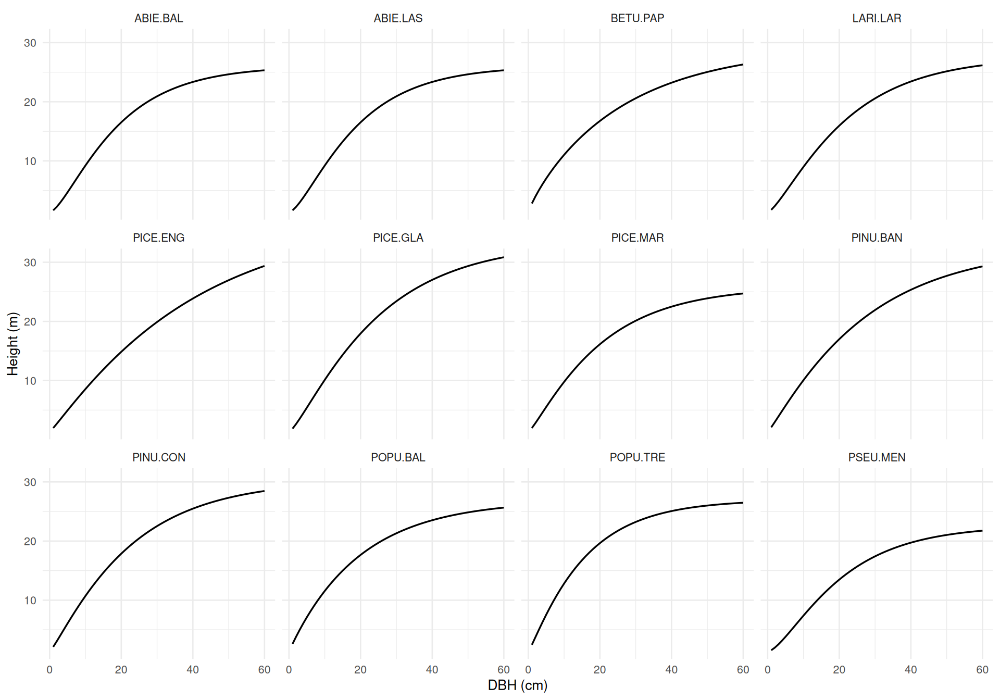
hd_huang2016()
Alberta (Huang et al., 2016). Provincial models (no natural_subregion).
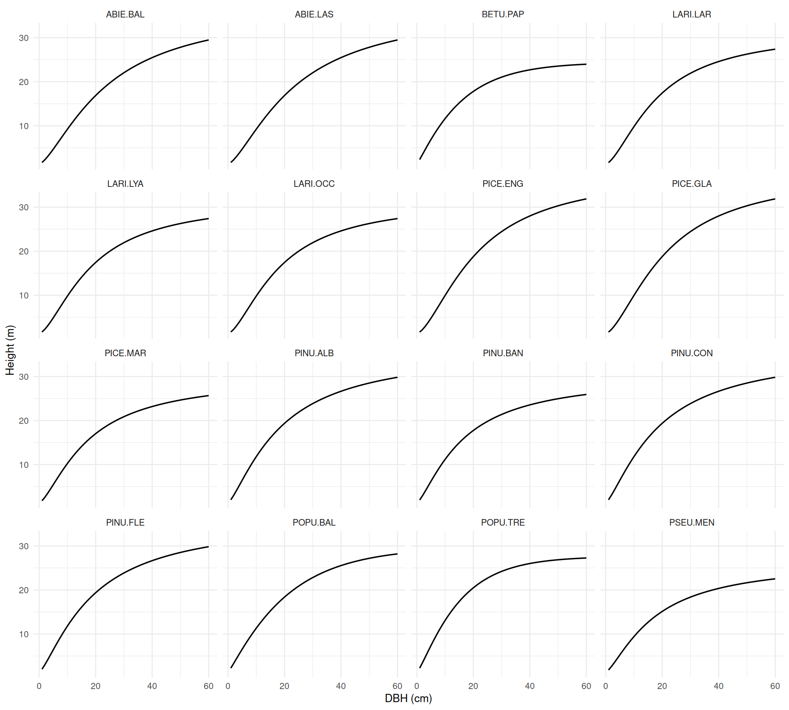
hd_huang2016b()
Alberta (Huang and Yang, 2016). BA = 25 m²/ha, several HDOM values.
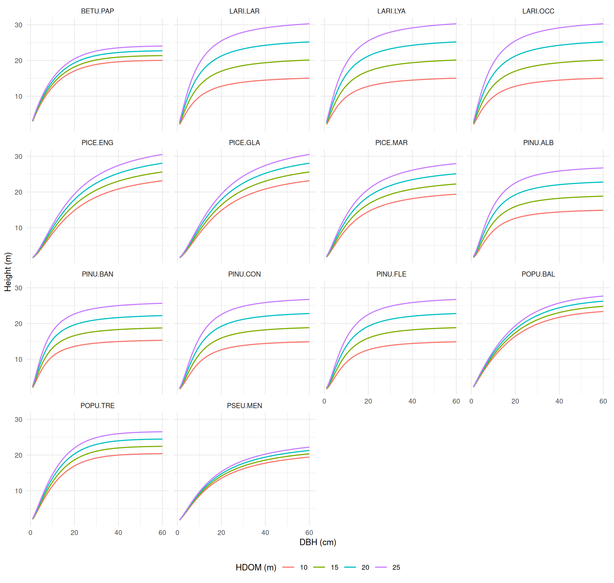
hd_sharmaparton2007()
Northern Ontario (Sharma and Parton, 2007). BA = 25 m²/ha, TPH = 2,500 stems/ha, several HDOM values.
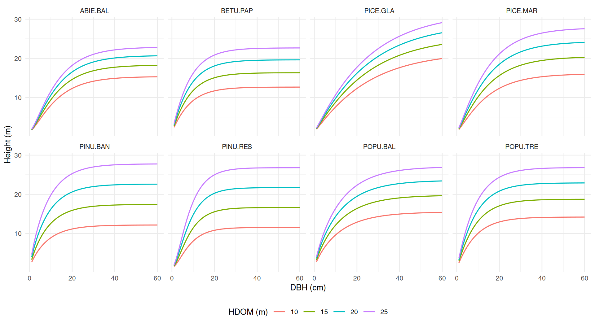
hd_sharma2016()
Ontario (Sharma, 2016). HDOM = 16 m, BA = 25 m²/ha, TPH = 2,200 stems/ha.
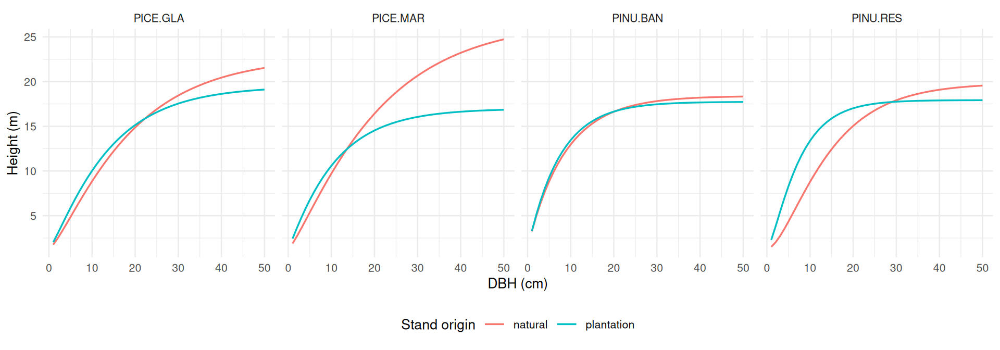
hd_sharmazhang2004()
Northern Ontario (Sharma and Zhang, 2004). Eq. 2 with TPH = 1,500 stems/ha and several BA values; eq. 5 (DBH only).
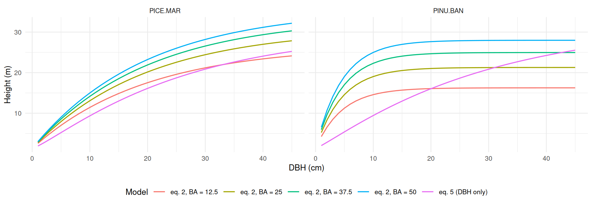
hd_eslamdoust2026()
Ontario (Eslamdoust et al., 2026). M4 (DBH only) and M5 with HDOM = 20 m, BA = 25 m²/ha, TPH = 1,500 stems/ha.
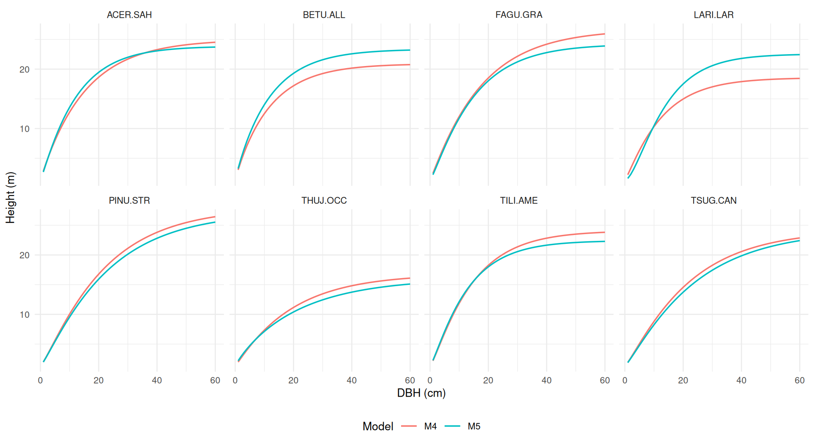
hd_eslamdoust2026b()
Ontario white pine plantations (Eslamdoust, 2026), using the TR-79 population model with HDOM, BA and TPH. This is separate from the natural-stand model in hd_eslamdoust2026().
hd_eslamdoust2026b(DBH = c(10, 20, 30), HDOM = 18, BA = 30, TPH = 1500)
#> # A tibble: 3 × 1
#> height
#> <dbl>
#> 1 12.0
#> 2 15.7
#> 3 17.7
hd_huang2009()
Alberta black spruce (Huang et al., 2009). Model 9 (DBH only), 10 (HTOP = 16 m) and 11 (HTOP = 16 m, BA = 15 m²/ha).
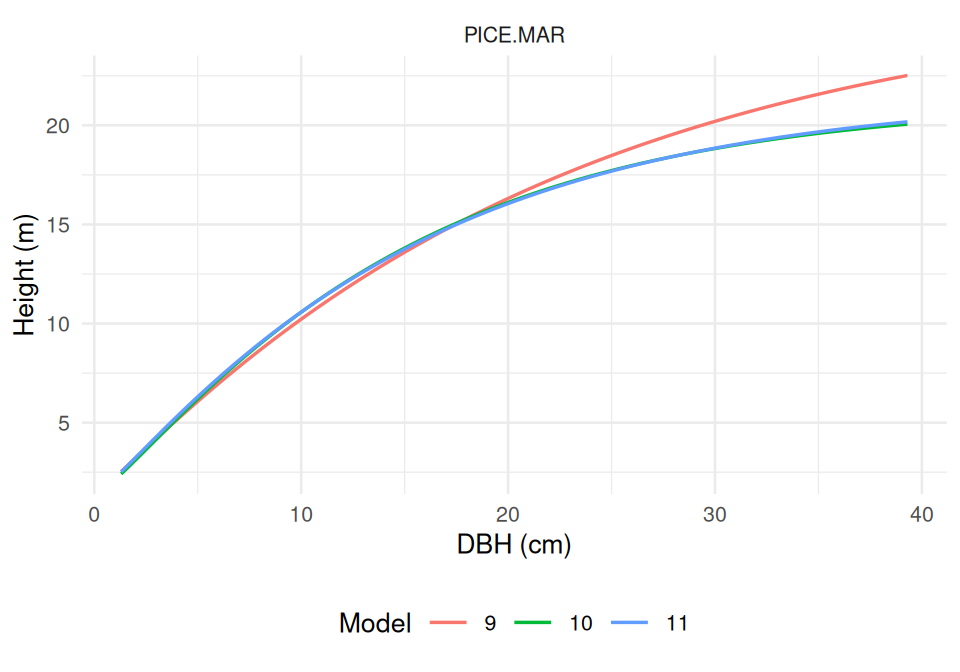
hd_zhang2002()
Ontario jack pine (Zhang et al., 2002). Ecoregion, forest-region and Ontario-wide fits.
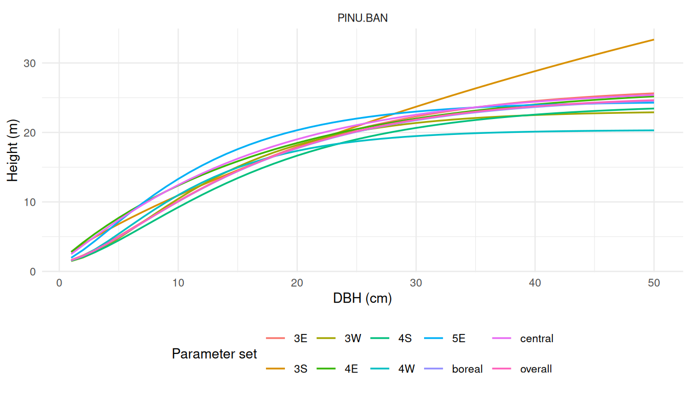
hd_temesgen2004()
Interior British Columbia (Temesgen and Gadow, 2004). Model 2 (DBH only) and Model 7 with BA = 25 m²/ha, TPH = 800 stems/ha, BAL = 10 m²/ha.
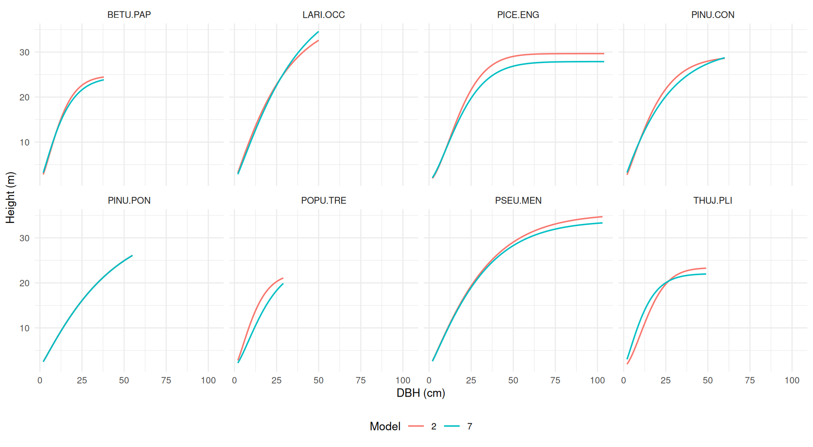
hd_staudhammerlemay2000()
Coastal British Columbia (Staudhammer and LeMay, 2000). Variant "dbh" (one curve per species) and variant "density" for three stands (A, B and C). For the conifers (eq 2b), stands A–C have DMAX = 40, 70 and 100 cm and each curve runs from 10 % of DMAX up to DMAX. For red alder (eq 2a), stands A–C have TPH = 1,000, 3,371 and 6,000 stems/ha and BA = 15, 30.7 and 50 m²/ha.
Eq 2b predicts height from relative DBH (DBH / DMAX). Within a stand, small trees are suppressed, and the curve drops slightly for the largest trees, past about 0.85–0.95 of DMAX. This drop comes from the published coefficients.
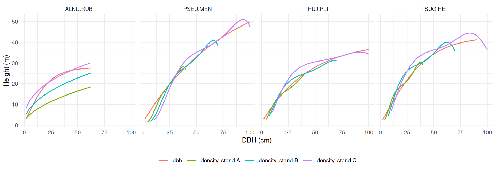
hd_rijal2012()
Acadian Region (Rijal et al., 2012). GNLS and NLME coefficients with BAL = 10 m²/ha, CCF = 150, CSI = 15 m.
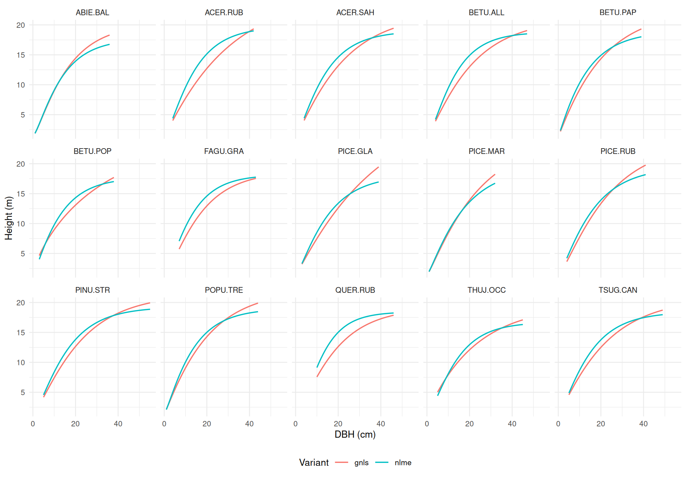
hd_auger2016()
Québec (Auger, 2016). BA = 20 m²/ha, QMD = 20 cm, bioclim_subdomain = "4est", physical_env = "2", potential_veg = "MS2", MAT = 2 °C, MAP = 1,000 mm, elevation = 300 m.
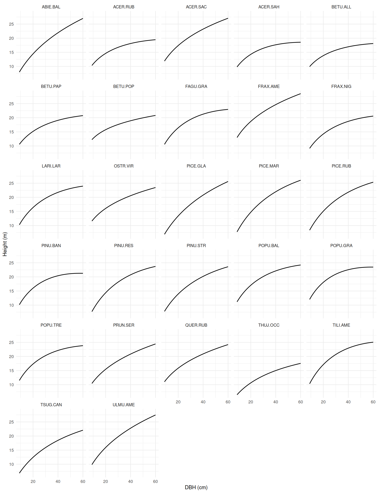
hd_fortin2009()
Québec (Fortin et al., 2009); superseded by hd_auger2016(). BA = 20 m²/ha, QMD = 20 cm, ecoregion = "4d", drainage = "mesic", MAT = 2 °C.
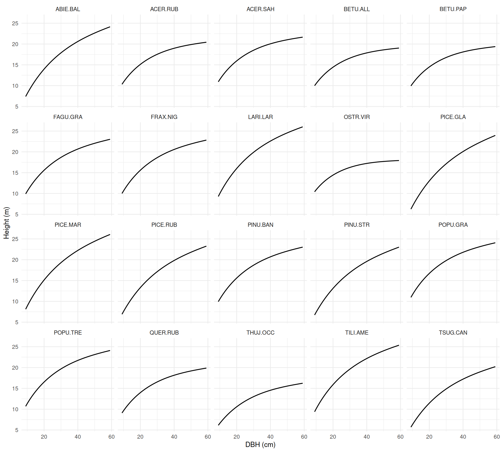
hd_auger2025()
Québec plantations (Auger et al., 2025). The dashed line is variant "dbh", the population-average curve. It is a Korf curve with a very large asymptote, so it does not level off within the data range. The coloured lines are the plot-specific variants for three plots:
-
"plot_mean_dbh":DMEAN= 6, 12 and 18 cm. -
"dominant":HDOM/DDOM= 6 m / 8 cm, 12 m / 16 cm and 18 m / 24 cm.
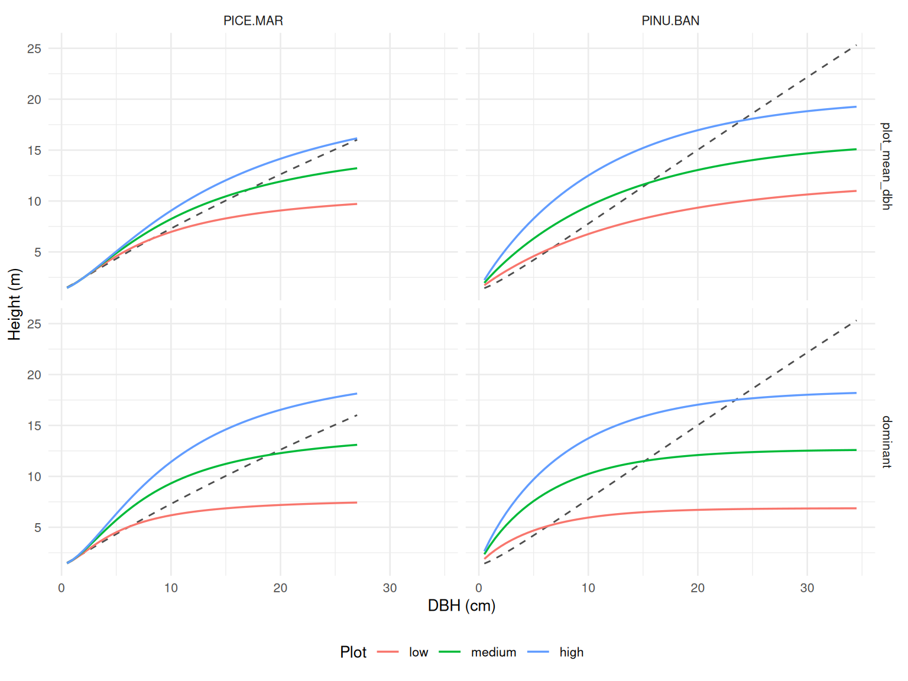
References
Auger, I., 2016. Une nouvelle relation hauteur-diametre tenant compte de l’influence de la station et du climat pour 27 essences commerciales du quebec (Note de recherche forestiere No. 146). Gouvernement du Quebec, ministere des Forets, de la Faune et des Parcs, Direction de la recherche forestiere, Quebec.
Auger, I., DeBlois, J., Lambert, M.-C., 2025. Relations hauteur-diametre, tarifs de cubage et equations de defilement pour l’epinette noire et le pin gris en plantation au quebec (Avis technique No. SSS-10). Gouvernement du Quebec, ministere des Ressources naturelles et des Forets, Direction de la recherche forestiere, Quebec. https://doi.org/10.82204/dcwg-5v65
Eslamdoust, J., 2026. Height–diameter model for white pine plantations in Ontario (Science and Research Technical Report No. TR-79). Ontario Ministry of Natural Resources, Science; Research Branch, Peterborough, ON.
Eslamdoust, J., Vasiliauskas, S., Little, T., Ashiq, M.W., 2026. Height–diameter modeling of tree species in boreal and mixed forests using a mixed-effects approach and stand-level variables. Forest Science and Technology 22, 217–230. https://doi.org/10.1080/21580103.2025.2571222
Fortin, M., Bernier, S., Saucier, J.-P., Labbé, F., 2009. Une relation hauteur-diametre tenant compte de l’influence de la station et du climat pour 20 especes commerciales du quebec (Memoire de recherche forestiere No. 153). Gouvernement du Quebec, ministere des Ressources naturelles et de la Faune, Direction de la recherche forestiere, Quebec.
Huang, S., Meng, S.X., Yang, Y., 2009. Using nonlinear mixed model technique to determine the optimal tree height prediction model for black spruce. Modern Applied Science 3, 3–18. https://doi.org/10.5539/mas.v3n4p3
Huang, S., Titus, S.J., Lakusta, T.W., Held, R.J., 1994. Ecologically based individual tree height-diameter models for major Alberta tree species (No. Report #2, Pub. No. T/291). Alberta Environmental Protection, Land; Forest Services, Edmonton, Alberta.
Huang, S., Yang, Y., 2016. Expanded individual tree height prediction models from tree diameter and other variables (No. Report #5, Tech. Rep. Pub. No. T/610). Forestry Division, Alberta Agriculture; Forestry, Edmonton, Alberta.
Huang, S., Yang, Y., Aitkin, D., 2016. Updated population and plot-specific individual tree height-diameter models for major Alberta tree species (No. Report #4, Tech. Rep. Pub. No. T/609). Forestry Division, Alberta Agriculture; Forestry, Edmonton, Alberta.
Rijal, B., Weiskittel, A.R., Kershaw, Jr., John A., 2012. Development of regional height to diameter equations for 15 tree species in the North American Acadian Region. Forestry 85, 379–389. https://doi.org/10.1093/forestry/cps036
Sharma, M., 2016. Comparing height–diameter relationships of boreal tree species grown in plantations and natural stands. Forest Science 62, 70–77. https://doi.org/10.5849/forsci.14-232
Sharma, M., Parton, J., 2007. Height–diameter equations for boreal tree species in Ontario using a mixed-effects modeling approach. Forest Ecology and Management 249, 187–198. https://doi.org/10.1016/j.foreco.2007.05.006
Sharma, M., Zhang, S.Y., 2004. Height–diameter models using stand characteristics for pinus banksiana and picea mariana. Scandinavian Journal of Forest Research 19, 442–451. https://doi.org/10.1080/02827580410030163
Staudhammer, C., LeMay, V., 2000. Height prediction equations using diameter and stand density measures. The Forestry Chronicle 76, 303–309. https://doi.org/10.5558/tfc76303-2
Temesgen, H., Gadow, K. von, 2004. Generalized height–diameter models—an application for major tree species in complex stands of interior British Columbia. European Journal of Forest Research 123, 45–51. https://doi.org/10.1007/s10342-004-0020-z
Zhang, L., Peng, C., Huang, S., Zhou, X., 2002. Development and evaluation of ecoregion-based jack pine height-diameter models for Ontario. The Forestry Chronicle 78, 530–538. https://doi.org/10.5558/tfc78530-4